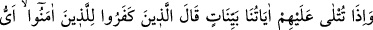
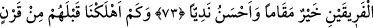
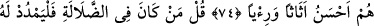
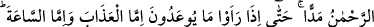
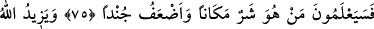
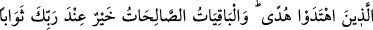
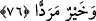
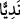

KALICI SÂLİH AMELLER
73. Onlara açık açık âyetlerimiz okunduğu zaman, inkârcılar, iman edenlere “İki
topluluktan hangisinin makâmı daha hayırlı, meclisi (mevkii) daha güzeldir?” derler.
74. Onlardan önce nice nesiller helâk ettik ki onlar eşyaca ve gösterişçe daha
güzeldi.
75. De ki: “Kim sapıklık içindeyse Rahmân ona mühlet versin (ne çıkar). Nihâyet
vaad edildiklerini -ya azabı veya kıyâmet saatini- gördükleri zaman kimin yer
açısından daha kötü ve taraftar bakımından daha zayıf olduğunu bileceklerdir.”
76. Allah, hidâyete erenlerin hidâyetini artırır. Kalıcı olan yararlı işler, Rabb’inin
katında hem mükâfat bakımından hem de varılacak yer bakımından daha iyidir.
“Onlara açık açık âyetlerimiz” yani müşriklere, mucize olduğu apaçık olan Kur’an
âyetleri “okunduğu zaman,” Nadr b. Hâris ve arkadaşları gibi “inkârcılar îman
edenlere” mü’minlerin fakirlerine: “İki topluluktan,” mü’min ve kâfirlerden
“hangisinin,” âdetâ derler ki: hangimizin, bizim mi yoksa sizin mi “makâmı” mekânı
ve evi “daha hayırlı, meclisi” ve toplantı yeri “daha güzeldir?” derler.” Bazı
müfessirler: “Âyette geçen “__WORD__ “ kelimesi, kavmin ileri gelenlerini, onların, yardımcı
ve arkadaşlarının tamamını içine alan meclis demektir.” demiştir.
Müşrikler: “Bizim nezih evlerimiz var ve her türlü maîşet sebepleri bizim için hazır.
Bizim meclisimizde Kureyş’in büyükleri ve Arab’ın eşrâfı var. O’nun meclisi ise hep
köle ve zayıf kimselerden ibâret.” derler.
Rivâyet edilir ki müşrikler saçlarını tarar, yağlar, kokular sürünür, kıymetli ziynetlerle
süslenirlerdi. Allâh’ın apaçık âyetlerini duyup onlara karşılık vermeye ve müdâhale
etmeye güçleri yetmeyince, dünyevî lezzetlerle böbürlenerek müslümanların fakirlerine:
“Eğer sizin yolunuz doğru, bizimki yanlış olsaydı, sizin dünyada durumunuz daha güzel
olurdu. Çünkü hikmet sahibi kimseye, dostlarını azab ve zillet içerisinde bırakıp